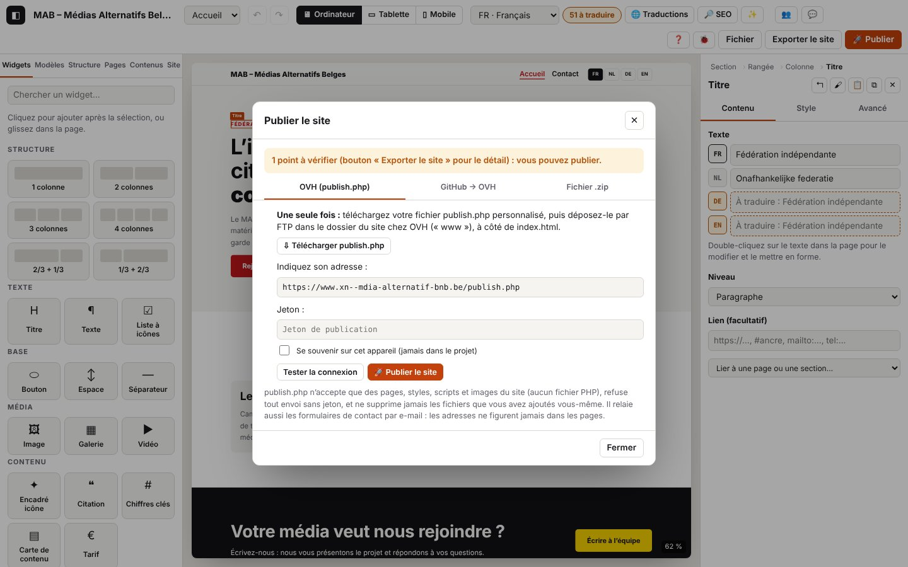

8. Vérifier, exporter, publier

Sur cette page
Avant de mettre le site en ligne, Atelier le vérifie (erreurs bloquantes, points à vérifier), puis le génère (pages HTML statiques, styles, images, sitemap, flux, agenda) et l'envoie : en .zip à déposer soi-même, sur OVH avec publish.php (un seul fichier PHP déposé une fois), ou dans un dépôt GitHub que l'hébergement déploie.
Domaines du journal : audit.* (vérification), export.* (fichier .zip), publish.* (fenêtre Publier : publish.php, test de connexion, GitHub), storage.secret-* (jetons gardés sur l'appareil), net.* (requêtes), php.* (ce que publish.php a fait, côté serveur).
8.1 Vérifier le site avant export
But : savoir si le site peut sortir, et ce qu'il faudrait corriger.
Étapes : bouton Exporter le site (en haut à droite), ou le badge « N à traduire ».
Ce que tu vois : la fenêtre « Vérification avant export » : erreurs (qui bloquent), points à vérifier (avec « Aller à »), informations, textes à traduire.
Journal attendu (journaux/export-zip.log)
Détails techniques : journal attendu
04:38:05.935 +6.36s INFO audit.open Vérification avant export : prêt (1 point(s) à vérifier) {"mode":"export","ok":true,"errors":0,"warnings":1,"info":3,"missing":51,"ms":3,"firstErrors":[],"firstWarnings":["Accueil : image non choisie : rien ne s’affichera à cet endroit."]}
04:38:05.937 +6.37s DEBUG ui.dialog.open Fenêtre ouverte : Vérification avant export {"id":"auditDialog","class":"audit","modal":true}missing = textes non traduits ; firstWarnings = les cinq premiers points à vérifier, en clair.
Variantes
| Situation | Ce qui change | Journal |
|---|---|---|
| Des erreurs bloquent l'export | « N erreur(s) empêche(nt) l’export. », bouton d'export désactivé | audit.open en WARN avec firstErrors |
| Badge « N à traduire » | fenêtre « Textes à traduire » | audit.open {"mode":"translations",…} |
| « Aller à » sur un point | la fenêtre se ferme, l'élément est sélectionné (page, langue, composant ou collection) | audit.go (INFO) avec la cible, puis store.view, store.select |
8.2 Exporter le site en .zip
But : obtenir tous les fichiers du site, pour les déposer sur n'importe quel hébergement.
Étapes : Exporter le site → « Exporter le site » (ou « Exporter quand même » s'il reste des points à vérifier).
Ce que tu vois : un fichier nom-du-site.zip est téléchargé ; message « Site exporté : N fichiers. ».
Journal attendu (journaux/export-zip.log)
Détails techniques : journal attendu
04:38:05.986 +6.42s INFO audit.export Export malgré des points à vérifier {"warnings":1}
04:38:05.988 +6.42s INFO export.zip.start [export.zip#1] Export du site en .zip
04:38:05.992 +6.42s DEBUG export.zip.render [export.zip#1 · 4 ms] Pages générées {"files":12,"ms":3}
04:38:05.999 +6.43s INFO export.zip.ok [export.zip#1 · 11 ms] Site exporté : 12 fichiers {"files":12,"kb":69,"untranslated":51}
04:38:05.999 +6.43s INFO ui.toast Message affiché : Site exporté : 12 fichiers. 51 textes non traduits s’affichent dans la langue principale.Erreurs
| Situation | Message affiché | Journal | Que faire |
|---|---|---|---|
| Le site n'est pas valide | « Export impossible : … » | export.zip.fail (ERROR) avec les erreurs | corrige la première erreur citée |
| Erreur pendant la génération (bogue) | « Export impossible : … » | export.zip.fail (ERROR) avec la pile d'appels | envoie-nous le journal |
8.3 Publier sur OVH : installer publish.php (une fois)
But : permettre à Atelier de publier directement sur l'hébergement.
Étapes
- 🚀 Publier → onglet « OVH (publish.php) » → ⇩ Télécharger publish.php. Le fichier contient seulement l'empreinte d'un nouveau jeton ; le jeton lui-même reste dans le champ « Jeton » (coche « Se souvenir sur cet appareil » pour le garder, jamais dans le projet).
- Dépose
publish.phppar FTP dans le dossier du site (« www »), à côté deindex.html. Il remplace l'ancien s'il y en avait un : l'ancien jeton ne marche plus. - Indique son adresse :
https://www.ton-site.be/publish.php.
Journal attendu (journaux/publier-telecharger-php.log)
Détails techniques : journal attendu
04:38:06.183 +6.61s INFO publish.open Fenêtre Publier {"mode":"zip","tab":"php","ok":true,"errors":0,"warnings":1}
04:38:06.197 +6.63s DEBUG storage.secret-read Aucun secret gardé {"name":"php-token"}
04:38:06.198 +6.63s DEBUG storage.secret-read Aucun secret gardé {"name":"github-token"}
04:38:06.287 +6.72s INFO storage.secret-write Secret oublié sur cet appareil {"name":"php-token"}
04:38:06.297 +6.73s INFO publish.php.generate publish.php v4 téléchargé avec un nouveau jeton (l’ancien publish.php ne l’acceptera pas) {"version":"4","remember":false}publish.open: état de la vérification au moment d'ouvrir (firstErrorsi la publication est bloquée).storage.secret-read/storage.secret-write: le jeton gardé ou oublié sur cet appareil (« Secret gardé… » si la case est cochée). Le jeton n'apparaît jamais dans le journal.
Erreurs
| Situation | Message affiché | Journal | Que faire |
|---|---|---|---|
Adresse qui ne finit pas par publish.php ou pas en https | « Adresse attendue : https://www.votre-site.be/publish.php » | publish.settings-invalid (WARN) | corrige l'adresse (http est accepté seulement pour un essai local) |
| Jeton illisible sur l'appareil | storage.secret-fail (WARN) | ressaisis le jeton |
8.4 Tester la connexion
But : vérifier que publish.php répond, qu'il est à jour, que le jeton correspond, et connaître les limites de l'hébergement.
Étapes : « Tester la connexion ».
Ce que tu vois : « Connexion réussie : publish.php version 4, PHP 8.x. Envoi max. 2M (formulaire 8M), mail() présent, dossier inscriptible. »
Journal attendu (journaux/publier-tester-connexion.log)
Détails techniques : journal attendu
04:38:06.392 +6.82s INFO publish.test.start [publish.test#1] Test de connexion à publish.php {"url":"http://127.0.0.1:9501/publish.php","token":true}
04:38:06.393 +6.82s DEBUG net.request GET 127.0.0.1:9501/publish.php {"id":1,"method":"GET","url":"http://127.0.0.1:9501/publish.php?atelier_debug=1"}
04:38:06.416 +6.84s DEBUG net.response 200 GET 127.0.0.1:9501/publish.php (23 ms) {"id":1,"status":200,"ms":23,"type":"application/json","req":"3f2f4264"}
04:38:06.422 +6.85s DEBUG php.req.start GET reçu {"method":"GET","who":"e184e45609","bytes":0,"ua":"Mozilla/5.0 …","origin":"http://localhost:8791","req":"3f2f4264","srvMs":0}
04:38:06.423 +6.85s WARN php.diag Diagnostic de l’hébergement demandé : limite d’envoi basse (2 Mo) {"upload_max":"2M","post_max":"8M","data_writable":true,"zip":true,"mail":true,"req":"3f2f4264","srvMs":0.6}
04:38:06.423 +6.85s DEBUG php.status Statut demandé (test de connexion) {"version":"4","zip":true,"diag":true,"req":"3f2f4264","srvMs":1}
04:38:06.423 +6.85s DEBUG php.req.end Réponse 200 (status) {"status":200,"route":"status","mem_kb":741,"req":"3f2f4264","srvMs":1}
04:38:06.418 +6.85s INFO publish.test.diag [publish.test#1 · 26 ms] Diagnostic de l’hébergement {"upload_max_filesize":"2M","post_max_size":"8M","memory_limit":"-1","max_execution_time":30,"mail":true,"data_writable":true,"root_writable":true,"log_level":"info",…}
04:38:06.418 +6.85s INFO publish.test.ok [publish.test#1 · 26 ms] publish.php répond {"version":"4","php":"8.3.6","zip":true,"req":"3f2f4264"}- Les lignes
php.*viennent du serveur (trace de la requête3f2f4264). php.diagen WARN :upload_max_filesizeest sous 8 Mo. Le site entier est envoyé en un seul .zip : s'il dépasse cette limite, la publication échoue (php.publish.nofile). Chez OVH, la limite se règle dans l'espace client (configuration PHP) ou par.user.ini.publish.test.diag: tout le diagnostic (envoi max., mémoire, durée max.,mail(), droits d'écriture, place libre, extensions).
Variantes
| Situation | Ce qui change | Journal |
|---|---|---|
| Sans jeton dans le champ | pas de diagnostic | publish.test.start {"token":false}, php.status {"diag":false}, publish.test.ok |
| publish.php ancien (version 3 ou moins) | « Une version plus récente (4) existe : retéléchargez publish.php pour avoir le journal du serveur. » | publish.test.old-version (WARN) {"installed":"3","expected":"4"} |
Erreurs (journaux/publier-tester-erreurs.log, journaux/publier-ovh-jeton-absent-faux.log)
| Situation | Message affiché | Journal | Que faire |
|---|---|---|---|
| Serveur injoignable, adresse fausse, fichier absent | « Pas de réponse de publish.php à cette adresse (Failed to fetch)… » | net.fail (ERROR), publish.test.fail (ERROR) avec hint | ouvre l'adresse dans un onglet : elle doit afficher {"atelier":true,…} ; sinon le fichier n'est pas au bon endroit |
PHP affiche des avertissements dans la réponse (mode « dev » d'OVH, display_errors) | « … réponse 200 qui n’est pas celle de publish.php » | publish.test.not-json (WARN) avec le début de la réponse (start), puis publish.test.fail | lis start : c'est le message de PHP ; repasse l'hébergement en mode production (.ovhconfig) |
| Le jeton saisi ne correspond pas à ce publish.php | « Attention : le jeton saisi ne correspond pas à ce publish.php. » | publish.test.token-refused (WARN) ; côté serveur php.diag.denied (WARN) | retélécharge publish.php et redépose-le, ou reprends le bon jeton |
| Extension zip absente sur l'hébergement | « … extension zip absente ! » | publish.test.no-zip (WARN) | active l'extension zip (configuration PHP de l'hébergement) ou publie par GitHub |
Détails techniques : journal attendu
04:38:08.110 +8.54s INFO publish.test.start [publish.test#3] Test de connexion à publish.php {"url":"http://127.0.0.1:9502/publish.php","token":true}
04:38:08.116 +8.54s ERROR net.fail GET 127.0.0.1:9502/publish.php : Failed to fetch (réseau, CORS ou adresse injoignable) {"id":7,…,"online":true,"error":{"name":"TypeError","message":"Failed to fetch"}}
04:38:08.117 +8.55s ERROR publish.test.fail [publish.test#3 · 7 ms] Failed to fetch {"url":"http://127.0.0.1:9502/publish.php","hint":"Le navigateur n’a reçu aucune réponse utilisable : serveur injoignable, adresse fausse, ou réponse sans autorisation CORS (fichier absent → page d’erreur de l’hébergement, ou PHP non exécuté).",…}
04:38:08.288 +8.72s DEBUG net.response 200 GET 127.0.0.1:9501/avertissement/publish.php (7 ms) {"id":9,"status":200,"ms":7,"type":"text/html"}
04:38:08.290 +8.72s WARN publish.test.not-json [publish.test#5 · 10 ms] La réponse n’est pas du JSON : PHP n’est peut-être pas exécuté, ou une page d’erreur de l’hébergement répond {"status":200,"start":"<br />\n<b>Warning</b>: session_start()…"}
04:38:08.366 +8.79s WARN publish.test.old-version [publish.test#6 · 9 ms] publish.php installé en version 3 : la version 4 ajoute le journal du serveur et le diagnostic {"installed":"3","expected":"4"}
04:38:08.366 +8.79s INFO publish.test.ok [publish.test#6 · 9 ms] publish.php répond {"version":"3","php":"8.3.6","zip":true}8.5 Publier sur OVH
But : mettre le site en ligne en un clic.
Étapes : « 🚀 Publier le site ».
Ce que tu vois : « Site publié : N fichiers envoyés… » et le message « Site publié (N fichiers). ».
Journal attendu (journaux/publier-ovh.log)
Détails techniques : journal attendu
04:38:06.488 +6.92s INFO publish.php.start [publish.php#1] Publication sur OVH (publish.php) {"url":"http://127.0.0.1:9501/publish.php"}
04:38:06.496 +6.92s INFO publish.php.warnings [publish.php#1 · 8 ms] 1 point(s) à vérifier (la publication continue) {"warnings":[…]}
04:38:06.506 +6.93s DEBUG net.response 200 GET 127.0.0.1:9501/publish.php (10 ms) {"id":2,"status":200,"ms":10,"type":"application/json","req":"e5f9f793"}
04:38:06.514 +6.94s DEBUG publish.php.version [publish.php#1 · 26 ms] publish.php installé : version 4 {"version":"4"}
04:38:06.518 +6.95s INFO publish.php.package [publish.php#1 · 30 ms] Paquet prêt : 12 fichiers {"files":12,"kb":69,"forms":0,"ms":4}
04:38:06.520 +6.95s DEBUG net.request POST 127.0.0.1:9501/publish.php {"id":3,"method":"POST","url":"http://127.0.0.1:9501/publish.php?atelier_debug=1","body":{"site":"Blob application/zip (69 Ko)","forms":"2 car."}}
04:38:06.537 +6.97s INFO net.response 200 POST 127.0.0.1:9501/publish.php (18 ms) {"id":3,"status":200,"ms":18,"type":"application/json","req":"55a4ec48"}
04:38:06.539 +6.97s DEBUG php.req.start POST reçu {"method":"POST","who":"e184e45609","bytes":71370,…,"req":"55a4ec48","srvMs":0}
04:38:06.539 +6.97s INFO php.publish.start Paquet reçu {"kb":69,"req":"55a4ec48","srvMs":0}
04:38:06.539 +6.97s DEBUG php.publish.checked Paquet vérifié {"files":12,"req":"55a4ec48","srvMs":0.4}
04:38:06.539 +6.97s DEBUG php.publish.staged Fichiers préparés à part {"files":12,"req":"55a4ec48","srvMs":2}
04:38:06.539 +6.97s INFO php.publish.ok Site publié {"written":12,"moved":12,"removed":0,"forms":0,"req":"55a4ec48","srvMs":3.8}
04:38:06.539 +6.97s INFO php.req.end Réponse 200 (publish) {"status":200,"route":"publish","mem_kb":746,"req":"55a4ec48","srvMs":3.8}
04:38:06.538 +6.97s INFO publish.php.ok [publish.php#1 · 50 ms] Site publié : 12 fichiers {"written":12,"removed":0,"ref":"55a4ec48"}À vérifier : publish.php.version (la version installée décide si les fichiers d'agenda .ics sont envoyés), publish.php.package (taille du paquet : à comparer avec la limite d'envoi de 8.4), puis côté serveur php.publish.start → checked (noms et types vérifiés) → staged (tout est écrit à part) → ok (mise en place ; removed = anciens fichiers du site retirés, jamais ceux que tu as ajoutés toi-même), forms = formulaires de contact enregistrés.
Variantes
| Situation | Ce qui change | Journal |
|---|---|---|
| Des points à vérifier | la publication continue | publish.php.warnings (INFO) |
| publish.php en version 1 | les .ics ne sont pas envoyés, le message le signale | publish.php.version {"version":"1"}, publish.php.package {"skipped":N} |
| Version de publish.php inconnue (statut illisible) | envoi prudent, sans .ics | publish.php.version-unknown (WARN) |
| Des formulaires ont une adresse e-mail invalide | ils ne relaient rien | côté serveur php.publish.forms-skipped (WARN) |
Erreurs (journaux/publier-ovh-mauvais-jeton.log)
| Situation | Message affiché | Journal | Que faire |
|---|---|---|---|
| Jeton absent | « Indiquez le jeton de publication (ou créez un nouveau publish.php). » | publish.php.fail (ERROR) « jeton absent » | saisis le jeton |
| Jeton faux | « Échec de la publication : Jeton de publication refusé. (référence xxxxxxxx dans le journal du serveur) » — après 1 s | net.response 401 (WARN), publish.php.fail (ERROR) avec ref ; serveur : php.publish.denied (WARN) | reprends le jeton du publish.php déposé, ou retélécharge publish.php |
| La vérification bloque | « Publication impossible : … » | publish.php.fail (ERROR) « Publication bloquée par la vérification » avec errors | corrige d'abord (8.1) |
| Paquet refusé (fichier non autorisé) : ne devrait jamais arriver avec Atelier | « Échec de la publication : Paquet refusé : rien n’a été publié. — nom : raison » | publish.php.rejected (WARN) avec la liste ; serveur php.publish.rejected (WARN) | envoie-nous le journal |
| Site trop lourd pour l'hébergement | « … Fichier du site manquant (upload_max_filesize dépassé ; …) » ou « erreur 413 (site trop lourd…) » | serveur : php.publish.nofile (WARN) avec content_length, upload_max, post_max ; ou php.publish.too-big | allège les images, ou augmente upload_max_filesize et post_max_size chez l'hébergeur |
| Archive abîmée en route | « Archive illisible. » | serveur : php.publish.bad-zip (WARN) | republie |
| Extension zip absente | « Extension PHP zip absente sur cet hébergement. » | serveur : php.publish.nozip (ERROR) | voir 8.4 |
| Disque plein, droits d'écriture | « Écriture impossible sur l’hébergement : … » / « Le dossier atelier-data ne peut pas être créé… » | serveur : php.publish.write-fail, php.publish.read-fail, php.publish.move-fail, php.data-fail, php.write-fail (ERROR) | vérifie l'espace et les droits (FTP) ; envoie le journal du serveur |
| Bogue ou panne de PHP | « Erreur interne de publish.php (référence xxxxxxxx dans le journal du serveur). » | serveur : php.exception ou php.fatal (ERROR), php.warning (WARN) pour les avertissements | lis le journal du serveur (chapitre 0) et envoie-le-nous |
Détails techniques : journal attendu
04:38:06.618 +7.05s INFO publish.php.start [publish.php#2] Publication sur OVH (publish.php) {"url":"http://127.0.0.1:9501/publish.php"}
…
04:38:07.654 +8.08s WARN net.response 401 POST 127.0.0.1:9501/publish.php (1012 ms) {"id":5,"status":401,"ms":1012,"type":"application/json","req":"38ae9a08"}
04:38:07.656 +8.09s DEBUG php.req.start POST reçu {…,"req":"38ae9a08","srvMs":0}
04:38:07.656 +8.09s WARN php.publish.denied Publication refusée : jeton faux {"req":"38ae9a08","srvMs":0}
04:38:07.656 +8.09s WARN php.req.end Réponse 401 (publish) {"status":401,"route":"publish","mem_kb":746,"req":"38ae9a08","srvMs":1000.3}
04:38:07.655 +8.08s ERROR publish.php.fail [publish.php#2 · 1037 ms] Jeton de publication refusé. {"status":401,"ref":"38ae9a08","error":{…}}Le journal de publish.php pour chaque requête
| Code (serveur) | Niveau | Sens |
|---|---|---|
php.req.start | DEBUG | requête reçue : méthode, empreinte du visiteur who, taille, navigateur, origine |
php.req.end | DEBUG (consultation), INFO (envoi), WARN (4xx), ERROR (5xx) | réponse envoyée : statut, route (status, publish, contact, signal, logs), mémoire |
php.status | DEBUG | statut demandé (test de connexion) |
php.method | WARN | méthode HTTP non autorisée (ni GET, ni POST, ni OPTIONS) |
php.data-corrupt | WARN | un fichier privé d'atelier-data est illisible : il est ignoré |
8.6 Publier sur GitHub (déploiement par OVH)
But : publier sans PHP : Atelier crée un commit dans un dépôt GitHub (seulement les fichiers modifiés), et l'hébergement le déploie grâce à son intégration Git.
Étapes : 🚀 Publier → « GitHub → OVH » ; propriétaire, dépôt, branche, dossier ; jeton à accès limité (« Contents : Read and write ») ; « 🚀 Publier sur GitHub ».
Journal attendu (journaux/publier-github.log, API de GitHub simulée dans le test)
Détails techniques : journal attendu
04:38:13.972 +14.40s INFO publish.github.start [publish.github#1] Publication sur GitHub {"owner":"aktina","repo":"site-mab","branch":"main","dir":"(racine)","token":true}
04:38:13.980 +14.41s INFO publish.github.package [publish.github#1 · 8 ms] 12 fichiers générés {"files":12}
04:38:14.001 +14.43s DEBUG net.response 200 GET api.github.com/repos/aktina/site-mab/git/ref/heads/main (19 ms) {…}
04:38:14.016 +14.45s DEBUG net.response 200 GET api.github.com/repos/aktina/site-mab/git/commits/ppppppppppppppppppppppppppppppp (14 ms) {…}
04:38:14.037 +14.47s DEBUG net.response 200 GET api.github.com/repos/aktina/site-mab/git/trees/ttttttttttttttttttttttttttttttttt (18 ms) {…}
04:38:14.049 +14.48s INFO net.response 201 POST api.github.com/repos/aktina/site-mab/git/blobs (9 ms) {…}
04:38:14.050 +14.48s DEBUG publish.github.upload [publish.github#1 · 78 ms] Fichier envoyé 1 / 12 {"done":1,"total":12}
…
04:38:14.179 +14.61s INFO net.response 201 POST api.github.com/repos/aktina/site-mab/git/trees (9 ms) {…}
04:38:14.189 +14.62s INFO net.response 201 POST api.github.com/repos/aktina/site-mab/git/commits (6 ms) {…}
04:38:14.197 +14.63s INFO net.response 200 PATCH api.github.com/repos/aktina/site-mab/git/refs/heads/main (7 ms) {…}
04:38:14.198 +14.63s INFO publish.github.ok [publish.github#1 · 226 ms] Publié sur GitHub : commit c0ffee1 {"commit":"c0ffee1000000000000000000000000000000000","uploaded":12,"removed":0,"unchanged":0}À vérifier : la branche (ref), le dernier commit, l'arbre actuel, puis un envoi (blobs) par fichier modifié seulement, le nouvel arbre, le commit, et la mise à jour de la branche. unchanged = fichiers identiques, non renvoyés.
Erreurs (journaux/publier-github-refuse.log)
| Situation | Message affiché | Journal | Que faire |
|---|---|---|---|
| Jeton refusé (401/403) | « GitHub refuse le jeton : vérifiez qu’il donne accès en écriture au contenu de ce dépôt. » | net.response 401 (WARN), publish.github.fail (ERROR) | crée un jeton « fine-grained » limité à ce dépôt, « Contents : Read and write » |
| Dépôt ou branche introuvable (404) | « Introuvable sur GitHub (dépôt ou branche « main ») : … » | net.response 404 (WARN), publish.github.fail | vérifie propriétaire, dépôt et branche |
| Dépôt vide (409) | « Le dépôt est vide : créez-y d’abord un fichier… » | publish.github.fail | crée un README dans le dépôt |
| Nom invalide | « Nom de dépôt invalide… » / « Nom de branche invalide. » | publish.github.fail | corrige le champ |
| Réseau coupé | « Failed to fetch » | net.fail (ERROR), publish.github.fail | réessaie une fois en ligne |
Détails techniques : journal attendu
04:38:14.285 +14.71s INFO publish.github.start [publish.github#2] Publication sur GitHub {"owner":"aktina","repo":"site-mab","branch":"main","dir":"(racine)","token":true}
04:38:14.296 +14.72s INFO publish.github.package [publish.github#2 · 11 ms] 12 fichiers générés {"files":12}
04:38:14.306 +14.73s WARN net.response 401 GET api.github.com/repos/aktina/site-mab/git/ref/heads/main (9 ms) {"id":33,"status":401,"ms":9,"type":"application/json","size":29}
04:38:14.313 +14.74s ERROR publish.github.fail [publish.github#2 · 28 ms] GitHub refuse le jeton : vérifiez qu’il donne accès en écriture au contenu de ce dépôt. {…}Codes de ce chapitre
| Code | Niveau | Sens |
|---|---|---|
audit.export | INFO | export demandé depuis la vérification |
audit.go | INFO | « Aller à » un point signalé |
audit.open | INFO / WARN | vérification ouverte (WARN si des erreurs bloquent) |
export.zip.start, export.zip.render, export.zip.ok, export.zip.fail | INFO / DEBUG / INFO / ERROR | export en .zip |
php.data-corrupt | WARN | (serveur) fichier privé illisible |
php.data-fail | ERROR | (serveur) dossier atelier-data impossible à créer |
php.diag | INFO / WARN | (serveur) diagnostic de l'hébergement (WARN : limite d'envoi basse) |
php.diag.denied | WARN | (serveur) diagnostic refusé : jeton faux |
php.exception | ERROR | (serveur) exception PHP, réponse 500 avec la référence |
php.fatal | ERROR | (serveur) erreur fatale de PHP |
php.method | WARN | (serveur) méthode non autorisée |
php.publish.bad-zip | WARN | (serveur) archive illisible |
php.publish.checked | DEBUG | (serveur) paquet vérifié |
php.publish.denied | WARN | (serveur) publication refusée : jeton absent ou faux |
php.publish.forms-skipped | WARN | (serveur) formulaires à l'adresse invalide ignorés |
php.publish.move-fail | ERROR | (serveur) mise en place d'un fichier impossible |
php.publish.nofile | WARN | (serveur) fichier du site manquant (limite d'envoi…) |
php.publish.nozip | ERROR | (serveur) extension zip absente |
php.publish.ok | INFO / ERROR | (serveur) site publié (ERROR si des fichiers n'ont pas pu être mis en place) |
php.publish.read-fail | ERROR | (serveur) lecture impossible dans l'archive |
php.publish.rejected | WARN | (serveur) paquet refusé |
php.publish.staged | DEBUG | (serveur) fichiers préparés à part |
php.publish.start | INFO | (serveur) paquet reçu |
php.publish.too-big | WARN | (serveur) site trop volumineux |
php.publish.write-fail | ERROR | (serveur) écriture impossible |
php.req.end | DEBUG à ERROR | (serveur) réponse envoyée |
php.req.start | DEBUG | (serveur) requête reçue |
php.status | DEBUG | (serveur) statut demandé |
php.warning | WARN | (serveur) avertissement PHP |
php.write-fail | ERROR | (serveur) écriture d'un fichier privé impossible |
publish.github.start, publish.github.package, publish.github.upload, publish.github.ok, publish.github.fail | INFO / INFO / DEBUG / INFO / ERROR | publication sur GitHub |
publish.open | INFO | fenêtre Publier ouverte |
publish.php.generate | INFO | publish.php téléchargé avec un nouveau jeton |
publish.php.start, publish.php.warnings, publish.php.version, publish.php.version-unknown, publish.php.package, publish.php.rejected, publish.php.ok, publish.php.fail | INFO / INFO / DEBUG / WARN / INFO / WARN / INFO / ERROR | publication sur OVH |
publish.settings-invalid | WARN | réglage de publication refusé |
publish.test.start, publish.test.diag, publish.test.old-version, publish.test.token-refused, publish.test.no-zip, publish.test.not-json, publish.test.ok, publish.test.fail | INFO / INFO / WARN / WARN / WARN / WARN / INFO / ERROR | test de connexion |
storage.secret-fail | WARN | jeton illisible sur l'appareil |
storage.secret-read | DEBUG | jeton retrouvé (ou absent) sur l'appareil |
storage.secret-write | INFO | jeton gardé ou oublié sur l'appareil |